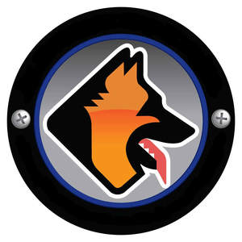
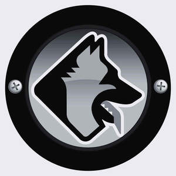

Trade Mark Journal No.2025/017 25 April 2025
UK00004185562 7 April 2025 (6,9,18,25,28,35,37,39,41,44,45)
Mark 1

Mark 2

- Class 6
- Security locks; security shutters; security barriers; security gates; security enclosures; parts, fittings and components for all the aforesaid goods.
- Class 9
- Electric security access apparatus; automated security gates, barriers or shutters; intruder detection apparatus; intruder sensors; intruder identification apparatus; security and surveillance apparatus and systems; surveillance cameras; closed circuit television systems (CCTV), apparatus and operating software for security and surveillance; network monitoring cameras; computer hardware for video surveillance; artificial intelligence software for surveillance; remote monitoring apparatus and equipment; security alarm systems; fire alarms; fire sensors; personal security alarms; panic alarms; location trackers programmed to use global positioning systems (GPS); electronic location and tracking apparatus and instruments; GPS tracking devices; vehicle tracking devices; telecommunications hardware and recorded software for monitoring and alerting remote sensor status via the Internet sold as a unit; thermal detection sensors [security systems]; motion sensors [security systems]; mobile CCTV towers; surveillance towers; audio theft deterrent devices; sirens; solar enabled security detection towers; security drones; protective clothing for security dog handlers; protective helmets with face guards for use with security dog training; bite-resistant armour for use with training service or security dogs; heavy duty catch poles for use with training service or security dogs; animal defence shields; protective clothing and headgear [body armour]; leg, arm and forearm protectors for use with service or security dog training; protective gloves for use with service or security dog training; groin protectors; protective overalls; protective padded clothing for protection against bodily harm; patrol radars; protective eyewear; sunglasses; spectacles; mobile telephone, tablet and laptop covers, cases, skins and accessories; USB sticks; mouse mats for computers; protective clothing for security guards; protective clothing for service or security dog handlers; parts, fittings and components for all the aforesaid goods.
- Class 18
- Clothing for animals; harnesses for animals; dog collars; dog muzzles; leashes and leads for animals; protective helmets for services dogs; protective ear covers for service or security dogs; protective muzzles for service or security dogs; protective body amour for service or security dogs; protective footwear for service or security dogs; leather bite tugs for dogs; parts, fittings and components for all the aforesaid goods.
- Class 25
- Clothing; footwear; headgear; security uniforms; tabards; overalls; rigger belts; printed T-shirts, tops, and hoodies; printed caps and beanies; parts, fittings and components for all the aforesaid goods.
- Class 28
- Dog toys; balls for games; games; devices for training and exercise with services dogs; training vests; bite-resistant dog vests; break and parting sticks for training service or security dogs; baiting sticks for training service or security dogs; marker flags for training service or security dogs; training balls and dumbbells for service or security dogs; bite pads, bite cushions and tugs for training service or security dogs; parts, fittings and components for all the aforesaid goods.
- Class 35
- Wholesale, retail, mail order, and online retail services in connection with the sale of safety, security, protection and signalling devices (including alarms and warning equipment), security locks, security shutters, security barriers, security gates, security enclosures, electric security access apparatus, automated security gates, barriers or shutters, intruder detection apparatus, intruder sensors, intruder alarms, intruder identification apparatus, security and surveillance apparatus and systems, surveillance cameras, closed circuit television systems (CCTV), apparatus and operating software for security and surveillance, network monitoring cameras, computer hardware for video surveillance, artificial intelligence software for surveillance, remote monitoring apparatus and equipment, security alarm systems, fire alarms, fire sensors, personal security alarms, panic alarms, location trackers programmed to use global positioning systems (GPS), electronic location and tracking apparatus and instruments, GPS tracking devices, vehicle tracking devices, telecommunications hardware and recorded software for monitoring and alerting remote sensor status via the Internet sold as a unit, thermal detection sensors [security systems], motion sensors [security systems], mobile CCTV towers, surveillance towers, audio theft deterrent devices, sirens, solar enabled security detection towers, security drones, protective clothing for security dog handlers, protective helmets with face guards for use with security dog training, bite-resistant armour for use with training service or security dogs, heavy duty catch poles for use with training service or security dogs, animal defence shields, protective clothing and headgear [body armour], leg, arm and forearm protectors for use with service or security dog training, protective gloves for use with service or security dog training, groin protectors, protective overalls, protective padded clothing for protection against bodily harm, patrol radars, protective eyewear, sunglasses, spectacles, mobile telephone, tablet and laptop covers, cases, skins and accessories, USB sticks, mouse mats for computers, clothing for animals, harnesses for animals, dog collars, dog muzzles, leashes and leads for animals, protective helmets for services dogs, protective ear covers for service or security dogs, protective muzzles for service or security dogs, protective body amour for service or security dogs, protective footwear for service or security dogs, leather bite tugs for dogs, clothing, footwear, headgear, security uniforms, tabards, overalls, protective clothing for security guards, protective clothing for service or security dog handlers, rigger belts, printed T-shirts, tops, and hoodies, printed caps and beanies, dog toys, balls for games, games, devices for training and exercise with services dogs, training vests, bite-resistant dog vests, break and parting sticks for training service or security dogs, baiting sticks for training service or security dogs, marker flags for training service or security dogs, training balls and dumbbells for service or security dogs, bite pads, bite cushions and tugs for training service or security dogs, parts, fittings and components for all the aforesaid goods.
- Class 37
- Installation, maintenance and repair services relating to security alarms, intruder alarms, fire alarms, safety alarms, CCTV security systems, surveillance systems, and external detection equipment and systems; installation, maintenance and repair services relating to security locks, security shutters, security barriers, security gates, security enclosures, electric security access apparatus, intruder detection apparatus, intruder sensors, intruder identification apparatus, security and surveillance apparatus and systems, surveillance cameras, closed circuit television systems (CCTV), apparatus and operating software for security and surveillance, network monitoring cameras, computer hardware for video surveillance, artificial intelligence software for surveillance, remote monitoring apparatus and equipment, security alarm systems, fire alarms, fire sensors, personal security alarms, panic alarms, location trackers programmed to use global positioning systems (GPS), electronic location and tracking apparatus and instruments, GPS tracking devices, vehicle tracking devices, telecommunications hardware and recorded software for monitoring and alerting remote sensor status via the Internet sold as a unit, thermal detection sensors [security systems], motion sensors [security systems], mobile CCTV towers, surveillance towers, audio theft deterrent devices, sirens, solar enabled security detection towers; locksmithing [repair]; information, consultancy and advisory services in relation to all of the aforesaid.
- Class 39
- Rescue services; guarded transportation of persons, valuables, or goods, being transport security services; security storage services; repossession services, namely physical removal of repossessed assets from debtors’ possession; rental of security drones; information, consultancy and advisory services in relation to all of the aforesaid.
- Class 41
- Education; providing of training; sporting and cultural activities; educational, training, teaching, tuition and instructional services; security training services; specialist security training for military, police, law enforcement and security industry officers; specialist training of security and service dogs; training of patrol dogs; training of service or security dogs; obedience, tracking, and protection training for service or security dogs; kennel services, namely dog training services; training services in connection with criminal investigation training; bodyguard training; close protection training; training services in relation to fraud, anti-money laundering, counter-terrorism and anti-terrorism; training regarding security guard services; training services in relation to investigation; sports training; education in martial arts; instruction in martial arts; professional training for law enforcement and security professionals; professional close combat training; training in relation to conflict and crisis management; education academy services; academy teaching services; adult education services; professional training services; practical training [demonstration]; educational examination services; development of educational methods; provision of accredited training and development courses; distance learning services provided online; organisation, creation, hosting, provision, presentation and conducting of live, online, or in-person events, meetings, seminars, webinars, workshops, classes, masterclasses, tutorials, demonstrations, presentations, training programs, courses, working groups, research groups, discussion groups, forums, conferences, congresses, conventions, colloquiums, symposiums and exhibitions for educational and entertainment purposes; creation and production of podcasts and vlogs; providing entertainment in the form of podcasts and vlogs; production of audio/visual presentations and recordings; providing online non-downloadable audio and video content; organisation of accredited examinations to grade level of achievement; issuing of educational awards; certification in relation to educational awards; issuing certificates in relation to examinations, awards and other forms of assessment; organisation of competitions and awards; organisation and hosting of judging panels; organisation of award entries and nominations; arranging, organising, hosting and conducting award ceremonies; assessment and performance review services; publication of printed training materials; publication of books; publication of printed matter; production and publication of course material distributed for professional courses; provision and publication of online information, instruction, teaching, training, examination, testing and assessment materials; publication of policies, toolkits, guidelines, templates, and procedures; development and dissemination of educational materials, including policies, toolkits, guidelines, templates, and procedures, and courses of instruction; providing group coaching, in-person learning forums, and on-line learning forums; educational services, namely, providing a school and academy offering training programs and support services; coaching services; mentoring services; personnel training; providing online non-downloadable electronic publications, learning resources, learning materials, coaching materials, coaching resources, training materials, training resources, educational materials, and educational resources; provision of on-line electronic (non-downloadable) coaching and learning resources and content; providing online non-downloadable audio, video and media content; providing online non-downloadable electronic audio files, image files, pre-recorded multimedia files, pre-recorded media content, text files, e-books, talking [audio] books, guides, journals, brochures, reports, written documents, videos, audio recordings, sound recordings, and digital music files; providing online non-downloadable webinars, podcasts, vlogs and blogs; providing online non-downloadable digital files and documents, printable templates, printable workflows, printable toolkits, and printable guidelines; non-downloadable publications provided via the Internet; filming of documentaries; production of films, videos and television programmes; publishing services; publication of printed matter, books, magazines, literature, printed training materials; publishing e-books and audio books; providing temporary use of online non-downloadable computer programs and software applications; coaching, training and education services delivered via the provision of members-only access to an online platform or portal; coaching, training and education services delivered via the provision of subscription-based membership services, namely providing members-only access to an online website or platform; provision and publication of online information, instruction, teaching, training, examination, testing and assessment materials; publication of policies, toolkits, guidelines, templates, and procedures; organisation and hosting of live entertainment events; provision of entertainment featuring film, videos, podcasts and documentaries; educational and entertainment services, namely delivery of live speaking presentations and events; delivery and presentation of speeches at live events and conferences for training and education purposes; organisation and provision of group recreational activities and team building exercises; personal appearances as a spokesperson in the nature of participating as a presenter or speaker at live events for educational purposes; provision of training and education for continuing professional development; creation, production and publication of audio and visual content for social media channels; information, consultancy and advisory services in relation to all of the aforesaid.
- Class 44
- Kennel services, namely dog breeding services; stud and breeding services for dogs; provision of trained service or security dogs to individuals with medical needs or disabilities; veterinary services; charitable services, namely provision of veterinary services to injured or ill service or security dogs; dog grooming services; information, consultancy and advisory services in relation to all of the aforesaid.
- Class 45
- Safety, rescue, security and enforcement services; security services for the protection of people, material assets, and property; security guard services; security dog handling services; security guard dog patrol services; provision of trained security and service dogs for the detection of persons, property, drugs, cash, explosives, firearms, pests and vermin; dog vehicle patrol services; security and enforcement services; public event security services; patrolled security services; security monitoring services; monitoring of burglar and security alarms; opening of locks [locksmiths’ services]; manned guarding services; civil protection (guarding) services; bodyguard services; escort security services; armed escort security services; close protection services for others; civil protection (guarding); monitoring of fire alarms; rental of fire alarms; counter-terrorism and intelligence services; armed security services; security surveillance services; monitoring of computer systems in the nature of surveillance services relating to the physical safety of persons and security of tangible property; alarm response services; emergency response alarm monitoring services; security guarding of facilities via remote monitoring systems; remote monitoring of security alarm devices for the dispatch of emergency security services; key holding services [burglar and security alarm response services]; closed circuit surveillance services; fraud and identify theft detection and protection services; financial identity monitoring services for fraud protection purposes; verification of personal identity as part of personal background investigations; security due diligence services; private investigation services; security intelligence services; track and trace [investigation] services; status verification [investigation] services; security threat assessment services; covert surveillance services; placement of covert operatives for investigation purposes; detective investigations; stolen goods tracking; test purchasing [anti-counterfeiting services]; supply chain integrity [investigation] services; penetration and break-in testing services to assess security vulnerability; investigation of assets, credit reports, fiscal assessments, and collection reports; preparation of expert evaluations and reports relating to security investigations; provision of reconnaissance, investigation and surveillance services; security screening services; security inspection services; electronic monitoring systems for security purposes; absconder tracking services; stolen vehicle tracking; fugitive tracking services; locating and tracking of missing persons or lost property; advisory services in the field of security systems; maritime security services; legal services in the field of privacy and security laws, regulations, and requirements; rental of security and surveillance cameras, systems, alarms, apparatus and equipment; advisory and consultation services in relation to event security, event crowd management and planning, event traffic and highways planning, and vendor licensing for events; rental of security dogs; legal services; bailiff services (legal services); mediation services; legal investigation services; law enforcement services; enforcement of court orders [legal services]; rehoming services for retired or serving service or security dogs; adoption services for retired or serving service or security dogs; information, consultancy and advisory services in relation to all of the aforesaid.
RS Security Services Limited
Representative: Avatar IP